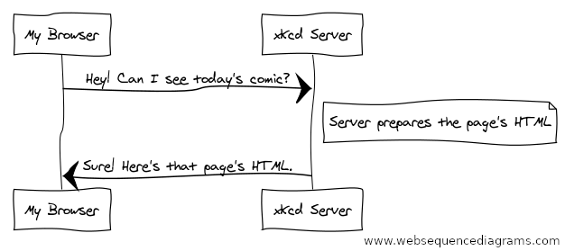

Symfony and HTTP Fundamentals¶
Great news! While you’re learning Symfony, you’re also learning the fundamentals of the web. Symfony is closely modeled after the HTTP Request-Response flow: that fundamental paradigm that’s behind almost all communication on the web.
In this article, you’ll walk through the HTTP fundamentals and find out how these are applied throughout Symfony.
Requests and Responses in HTTP¶
HTTP (Hypertext Transfer Protocol) is a text language that allows two machines to communicate with each other. For example, when checking for the latest xkcd comic, the following (approximate) conversation takes place:
HTTP is the term used to describe this text-based language. The goal of your server is always to understand text requests and return text responses.
Symfony is built from the ground up around that reality. Whether you realize it or not, HTTP is something you use every day. With Symfony, you’ll learn how to master it.
Step 1: The Client Sends a Request¶
Every conversation on the web starts with a request. The request is a text message created by a client (e.g. a browser, a smartphone app, etc) in a special format known as HTTP. The client sends that request to a server, and then waits for the response.
Take a look at the first part of the interaction (the request) between a browser and the xkcd web server:

In HTTP-speak, this HTTP request would actually look something like this:
1 2 3 4 | GET / HTTP/1.1
Host: xkcd.com
Accept: text/html
User-Agent: Mozilla/5.0 (Macintosh)
|
These few lines communicate everything necessary about exactly which
resource the client is requesting. The first line of an HTTP request is the
most important, because it contains two important things: the HTTP method (GET)
and the URI (/).
The URI (e.g. /, /contact, etc) is the unique address or location
that identifies the resource the client wants. The HTTP method (e.g. GET)
defines what the client wants to do with the resource. The HTTP methods (also
known as verbs) define the few common ways that the client can act upon the
resource - the most common HTTP methods are:
- GET
- Retrieve the resource from the server (e.g. when visiting a page);
- POST
- Create a resource on the server (e.g. when submitting a form);
- PUT/PATCH
- Update the resource on the server (used by APIs);
- DELETE
- Delete the resource from the server (used by APIs).
With this in mind, you can imagine what an HTTP request might look like to delete a specific blog post, for example:
1 | DELETE /blog/15 HTTP/1.1
|
Note
There are actually nine HTTP methods defined by the HTTP specification,
but many of them are not widely used or supported. In reality, many
modern browsers only support POST and GET in HTML forms. Various
others are however supported in XMLHttpRequest.
In addition to the first line, an HTTP request invariably contains other
lines of information called request headers. The headers can supply a wide
range of information such as the host of the resource being requested (Host),
the response formats the client accepts (Accept) and the application the
client is using to make the request (User-Agent). Many other headers exist
and can be found on Wikipedia’s List of HTTP header fields article.
Step 2: The Server Returns a Response¶
Once a server has received the request, it knows exactly which resource the client needs (via the URI) and what the client wants to do with that resource (via the method). For example, in the case of a GET request, the server prepares the resource and returns it in an HTTP response. Consider the response from the xkcd web server:
Translated into HTTP, the response sent back to the browser will look something like this:
1 2 3 4 5 6 7 8 | HTTP/1.1 200 OK
Date: Sat, 02 Apr 2011 21:05:05 GMT
Server: lighttpd/1.4.19
Content-Type: text/html
<html>
<!-- ... HTML for the xkcd comic -->
</html>
|
The HTTP response contains the requested resource (the HTML content in this case), as well as other information about the response. The first line is especially important and contains the HTTP response status code (200 in this case).
The status code communicates the overall outcome of the request back to the client. Was the request successful? Was there an error? Different status codes exist that indicate success, an error or that the client needs to do something (e.g. redirect to another page). Check out the list of HTTP status codes.
Like the request, an HTTP response contains additional pieces of information
known as HTTP headers. The body of the same resource could be returned in multiple
different formats like HTML, XML or JSON and the Content-Type header uses
Internet Media Types like text/html to tell the client which format is
being returned. You can see a List of common media types from IANA.
Many other headers exist, some of which are very powerful. For example, certain headers can be used to create a powerful caching system.
Requests, Responses and Web Development¶
This request-response conversation is the fundamental process that drives all communication on the web.
The most important fact is this: regardless of the language you use, the type of application you build (web, mobile, JSON API) or the development philosophy you follow, the end goal of an application is always to understand each request and create and return the appropriate response.
See also
To learn more about the HTTP specification, read the original HTTP 1.1 RFC or the HTTP Bis, which is an active effort to clarify the original specification.
Requests and Responses in PHP¶
So how do you interact with the “request” and create a “response” when using PHP? In reality, PHP abstracts you a bit from the whole process:
$uri = $_SERVER['REQUEST_URI'];
$foo = $_GET['foo'];
header('Content-Type: text/html');
echo 'The URI requested is: '.$uri;
echo 'The value of the "foo" parameter is: '.$foo;
As strange as it sounds, this small application is in fact taking information
from the HTTP request and using it to create an HTTP response. Instead of
parsing the raw HTTP request message, PHP prepares superglobal variables
(such as $_SERVER and $_GET) that contain all the information from the
request. Similarly, instead of returning the HTTP-formatted text response, you
can use the PHP header function to create response headers and
print out the actual content that will be the content portion of the response
message. PHP will create a true HTTP response and return it to the client:
1 2 3 4 5 6 7 | HTTP/1.1 200 OK
Date: Sat, 03 Apr 2011 02:14:33 GMT
Server: Apache/2.2.17 (Unix)
Content-Type: text/html
The URI requested is: /testing?foo=symfony
The value of the "foo" parameter is: symfony
|
Requests and Responses in Symfony¶
Symfony provides an alternative to the raw PHP approach via two classes that allow you to interact with the HTTP request and response in an easier way.
Symfony Request Object¶
The Request class is an
object-oriented representation of the HTTP request message. With it, you
have all the request information at your fingertips:
use Symfony\Component\HttpFoundation\Request;
$request = Request::createFromGlobals();
// the URI being requested (e.g. /about) minus any query parameters
$request->getPathInfo();
// retrieves $_GET and $_POST variables respectively
$request->query->get('id');
$request->request->get('category', 'default category');
// retrieves $_SERVER variables
$request->server->get('HTTP_HOST');
// retrieves an instance of UploadedFile identified by "attachment"
$request->files->get('attachment');
// retrieves a $_COOKIE value
$request->cookies->get('PHPSESSID');
// retrieves an HTTP request header, with normalized, lowercase keys
$request->headers->get('host');
$request->headers->get('content-type');
$request->getMethod(); // e.g. GET, POST, PUT, DELETE or HEAD
$request->getLanguages(); // an array of languages the client accepts
As a bonus, the Request class does a lot of work in the background that
you’ll never need to worry about. For example, the isSecure() method
checks the three different values in PHP that can indicate whether or not
the user is connecting via a secured connection (i.e. HTTPS).
Symfony Response Object¶
Symfony also provides a Response
class: a PHP representation of an HTTP response message. This allows your
application to use an object-oriented interface to construct the response that
needs to be returned to the client:
use Symfony\Component\HttpFoundation\Response;
$response = new Response();
$response->setContent('<html><body><h1>Hello world!</h1></body></html>');
$response->setStatusCode(Response::HTTP_OK);
// sets a HTTP response header
$response->headers->set('Content-Type', 'text/html');
// prints the HTTP headers followed by the content
$response->send();
There are also several response sub-classes to help you return JSON, redirect, stream file downloads and more.
Tip
The Request and Response classes are part of a standalone component
called symfony/http-foundation
that you can use in any PHP project. This also contains classes for handling
sessions, file uploads and more.
If Symfony offered nothing else, you would already have a toolkit for accessing request information and an object-oriented interface for creating the response. Even as you learn the many powerful features in Symfony, keep in mind that the goal of your application is always to interpret a request and create the appropriate response based on your application logic.
The Journey from the Request to the Response¶
Like HTTP itself, using the Request and Response objects is pretty
straightforward. The hard part of building an application is writing what comes in
between. In other words, the real work comes in writing the code that
interprets the request information and creates the response.
Your application probably does many things, like sending emails, handling form submissions, saving things to a database, rendering HTML pages and protecting content with security. How can you manage all of this and still keep your code organized and maintainable? Symfony was created to help you with these problems.
The Front Controller¶
Traditionally, applications were built so that each “page” of a site was
its own physical file (e.g. index.php, contact.php, etc.).
There are several problems with this approach, including the inflexibility
of the URLs (what if you wanted to change blog.php to news.php without
breaking all of your links?) and the fact that each file must manually
include some set of core files so that security, database connections and
the “look” of the site can remain consistent.
A much better solution is to use a front controller: a single PHP file that handles every request coming into your application. For example:
/index.php |
executes index.php |
/index.php/contact |
executes index.php |
/index.php/blog |
executes index.php |
Tip
By using rewrite rules in your
web server configuration,
the index.php won’t be needed and you will have beautiful, clean URLs
(e.g. /show).
Now, every request is handled exactly the same way. Instead of individual URLs executing different PHP files, the front controller is always executed, and the routing of different URLs to different parts of your application is done internally.
A small front controller might look like this:
// index.php
use Symfony\Component\HttpFoundation\Request;
use Symfony\Component\HttpFoundation\Response;
$request = Request::createFromGlobals();
$path = $request->getPathInfo(); // the URI path being requested
if (in_array($path, ['', '/'])) {
$response = new Response('Welcome to the homepage.');
} elseif ('/contact' === $path) {
$response = new Response('Contact us');
} else {
$response = new Response('Page not found.', Response::HTTP_NOT_FOUND);
}
$response->send();
This is better, but this is still a lot of repeated work! Fortunately, Symfony can help once again.
The Symfony Application Flow¶
A Symfony framework application also uses a front-controller file. But inside, Symfony is responsible for handling each incoming request and figuring out what to do:
Incoming requests are interpreted by the Routing component and
passed to PHP functions that return Response objects.
This may not make sense yet, but as you keep reading, you’ll learn about routes and controllers: the two fundamental parts to creating a page. But as you go along, don’t forget that no matter how complex your app gets, your job is always the same: read information from the Request and use it to create a Response.
Summary: The Request-Response Flow¶
Here’s what we’ve learned so far:
- A client (e.g. a browser) sends an HTTP request;
- Each request executes the same, single file (called a “front controller”);
- The front controller boots Symfony and passes the request information;
- Internally, Symfony uses routes and controllers to create the Response for the page (we’ll learn about these soon!);
- Symfony turns your
Responseobject into the text headers and content (i.e. the HTTP response), which are sent back to the client.